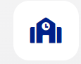

learn new tech skills using world-class curriculum and top industry experts.
SCICT AT A GLANCE
SQI College of ICT offers both National Diploma and Professional Certificate programmes.
The diploma Certificate conforms with the standard National Diploma Certificate obtained in Polytechnics while the Professional certificate is the certificate you earn after taking a professional course here at SQI.
You can use the Diploma certificate to seek admissions into the University through Direct Entry or for Higher National Diploma (HND). While the professional Certificate is recognized worldwide not as a degree but as a proof of having undergone professional training in the field for which the certificate is issued.
Our alumni work at world-class companies around the world including
Making Africa a Tech Continent…
We focus on quality teaching, learning and training to the globally acceptable productivity standard in accordance with the requirements of the industry, for which necessary research and preparation of courses are ensured to make industry-ready professionals.
SQI College of ICT is closely watching the interaction of industry and academia, getting feedback from our industry partners to provide the needed training while concentrating to contribute industry needed professionals in a very flexible study structure.
Software Engineering is one of the most in-demand
jobs across the globe today.
Software Engineers are also known as
programmers, developers or coders. They are the
ones behind all the apps and software you use
today either on your phone or computer within your
browser. Software such as banking apps, booking
apps, mailing apps (e.g Gmail), Chat apps (e.g WhatsApp) and other Social apps (e.g Twitter,
Facebook) and many more are created by
software engineers.
The eruption of data is transforming indiviuals and
businesses. Companies either big or small are now
expecting their business decisions to be based on
data-led insight.
Data specialists have a tremendous impact on
business strategies and marketing tactics because
everyone now depends on data to formulate
improved strategies for the future of their
companies.
More than ever before individuals and businesses
are relying on digital products and services. From
online meeting tools to finance, from e-commerce
platforms to healthcare and food apps. Making an
intuitive digital product design is even more import
at this time as it determines the overall experience
of the users.
Here, you’ll build your product design skillset
from the bottom up with lessons, mentorship sessions,
and career advice from our design professionals.
This course is designed to prepare you for success
in a modern world full of computers—not only the
traditional computers such as desktop and
notebook PCs but also computers that you interact
with in other places too, like your bank’s ATM or
your employer’s computerized cash register. In this
course, you will learn about the technologies that
drive our computerized society, including the
Internet and local area networks (LANs).
Taking this course will help you become a digitally
literate person—that is, someone who understands
how computer technology fits into our modern
society and knows how to navigate a variety of
computing environments.
Our courses are practical, hands-on learning. Practice and apply knowledge faster with real-world Web Development projects you can show off.
Expert Instructors
Get to interact with different mentors and draw from their loads of experience.
Physical & Virtual Class
You can now choose physical class experience or online classroom and learn from anywhere in the world.

Free access to our hub and community
You will have access to our fully functional hub for co- working and working on projects, assignments and even begin a start-up.
Job Opportunity
78.5% of our students found secure employment within three months of graduation. Students leave from learning to getting job roles
Alumni Support
Our students have access to alumni who currently work at top tech organizations in the world such as Google, Microsoft, Interswitch etc.
Certification
Be certified by an accredited and globally recognized institution. SQI got its accreditation in Sept 2021 from the NBTE, Nigeria.
Access to study materials
Students have access to prerecorded videos and resources they can make use of to further solidify their knowledge.
Latest News
SQI College of ICT Post-UTME
Examination date and change of
Institution 2023
Jul 10, 2023
SQI College of ICT Post-UTME
Examination Date, and Change of
Institution We would like to inform you
that the SQI Post-UTME Examination
has been slated for July 29, 2023. This
examination is a crucial step towards
gaining admission into SQI College of
ICT for the...
13TH SQI ICT Scholarship 2023
Jun 16, 2023
As technology continues to dominate
various industries, the demand for
professionals from diverse
backgrounds who have upgraded their
skills to meet market demands is on
the rise. I hereby announce the launch
of 2023 Scholarship. This year
scholarship has been tagged:...
Computer science in a nutshell
Jun 14, 2023
Computer science is the study of how
to use computers to solve problems. It
is a vast and ever-evolving field, with
new discoveries being made all the
time. Computer scientists are the
people who design, build, and maintain
the computers that we use every day.
They...